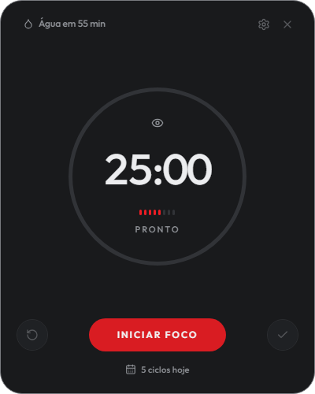
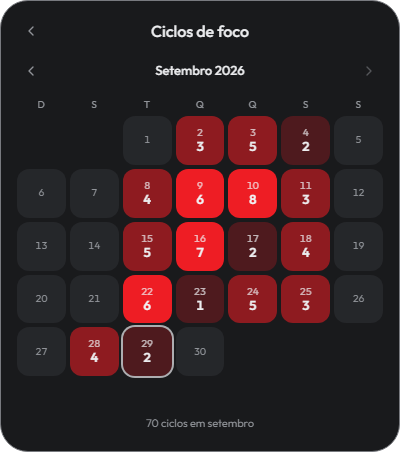

Ritmo para o seu dia
O Cadence dá ritmo ao seu trabalho com dois relógios que funcionam separados: um ciclo de foco que você inicia quando quer, e um lembrete de água e movimento que roda sozinho o dia inteiro.


Dois relógios, não um
O segundo não depende do primeiro. Mesmo num dia em que você não usar o cronômetro nenhuma vez, o lembrete de levantar continua chegando.
Ciclo de foco
25 minutos de trabalho seguidos de uma pausa. Você inicia — nenhuma fase começa sozinha.
Água e movimento
A cada 55 minutos, um aviso para beber água e levantar. Roda sozinho, o dia inteiro, independente do foco.
Instalar
Em cerca de 15 segundos o app instala e abre sozinho.
-
Clique em Baixar para Windows e guarde o arquivo
Cadence-Setup-0.1.0.exe. -
Dê dois cliques no arquivo baixado.
Pronto. Não há perguntas, não há escolha de pasta, e o Windows não pede senha de administrador.
Aviso do Windows na primeira vez Como o instalador ainda não tem certificado de assinatura, o Windows pode mostrar uma tela azul dizendo “O Windows protegeu o computador”. Clique em Mais informações e depois em Executar assim mesmo. Isso não volta a acontecer.
Depois de instalado você encontra o Cadence no Menu Iniciar, e o ícone fica na bandeja, perto do relógio do Windows.
A janela
Da esquerda para a direita, de cima para baixo.
| O que você vê | O que é |
|---|---|
| Água em 55 min | O segundo relógio. Clique para dizer que já bebeu e reiniciar a contagem |
| ⚙ | Configurações |
| ✕ | Esconde na bandeja. O app continua rodando |
| Círculo grande | O tempo que falta na fase atual. A borda se preenche conforme passa |
| Tracinhos | Ciclos que você já concluiu hoje |
| Palavra embaixo |
Em que fase você está: PRONTO, FOCO,
PAUSA, PAUSA LONGA
|
| ↺ | Zerar — desiste do ciclo atual. Não conta |
| INICIAR | Começa a fase que está esperando |
| ✓ | Concluir agora — encerra antes do tempo. Conta |
| 3 ciclos hoje | Clique para abrir o calendário |
Usando o ciclo de foco
Começar
Clique em INICIAR FOCO (ou aperte Espaço). O círculo começa a contar 25 minutos.
Enquanto trabalha
- PAUSAR congela o cronômetro. Pode ser o telefone, alguém chamando. Retomar continua de onde parou, e o ciclo não se perde.
- ✓ Concluir agora encerra o foco antes do tempo e conta como ciclo cumprido. Use quando terminou a tarefa aos 18 minutos.
- ↺ Zerar desiste. O ciclo não é contado.
A diferença entre os dois botões é a intenção: ✓ é terminei antes, ↺ é abandonei.
Quando o tempo acaba
O app avisa, toca um som, e deixa a pausa preparada.
Nenhuma fase começa sozinha. A pausa fica esperando você apertar o botão, e o foco seguinte também. Isso é de propósito: uma pausa que começasse sozinha enquanto você ainda está escrevendo simplesmente passaria, e você teria “descansado” sem sair da cadeira.
Pausa longa
A cada 4 ciclos concluídos no dia, a pausa seguinte é de
15 minutos em vez de 5. O ícone muda para uma poltrona e a tela diz
PAUSA LONGA.
A contagem é do dia todo, não de quatro seguidos sem parar — e ela zera sozinha à meia-noite.
O lembrete de água e movimento
A cada 55 minutos o Cadence avisa para você beber água e levantar.
- Se você ignorar, ele repete uma vez 10 minutos depois.
- Se ignorar de novo, ele se cala até o próximo intervalo. Ele não fica insistindo.
- Para dizer que já cuidou disso, clique em Água em XX min no alto da janela, ou clique no aviso que aparece.
Ele sabe quando você não está. Se ficar 10 minutos sem mexer no mouse nem no teclado, o lembrete pausa. Quando você volta, a contagem recomeça do zero — porque ficar esse tempo longe já foi levantar, que era o pedido dele.
E se o momento do aviso chegar quando você não está na frente do computador, ele espera você voltar em vez de avisar para a cadeira vazia.
O calendário
Clique em “N ciclos hoje”, no rodapé da janela.
Cada quadradinho é um dia do mês: o número de cima é o dia, o de baixo é quantos ciclos de foco você concluiu. Quanto mais vermelho, mais ciclos. O dia de hoje tem um contorno claro.
Use as setas para ver outros meses. O total do mês aparece embaixo.
Configurações
Clique no ⚙ ou aperte Ctrl + ,.
Todos os números podem ser digitados ou ajustados pelos botões − e +. As mudanças salvam na hora — não existe botão “Salvar”.
Durações
| Ajuste | Padrão |
|---|---|
| Sessão de foco | 25 min |
| Pausa curta | 5 min |
| Pausa longa | 15 min |
A duração que você mudar vale a partir da próxima fase que iniciar. O ciclo que já está correndo não muda no meio.
Lembretes
| Ajuste | Padrão | Para que serve |
|---|---|---|
| Água e movimento | 55 min | De quanto em quanto tempo o lembrete chega |
| Suspender após inatividade | 10 min | Quanto tempo sem mexer no computador para o app entender que você saiu |
| Som nas notificações | Ligado | |
| Som do aviso | Windows | Windows, Sino (o despertador de cozinha do pomodoro clássico) ou Suave |
O som toca quando você escolhe, para poder comparar antes de decidir.
Geral
- Tema: Claro, Escuro ou Sistema. Em “Sistema”, o app acompanha o Windows automaticamente.
- Iniciar com o Windows: ligado por padrão. O app sobe direto para a bandeja quando o computador liga, sem abrir janela.
O ícone na bandeja
O Cadence fica ao lado do relógio do Windows, mesmo com a janela fechada.
- Clique esquerdo: mostra ou esconde a janela.
- Passe o mouse: mostra a fase e o tempo que falta.
- Clique direito: abre o menu com tudo — iniciar, pausar, zerar, “já bebi água”, configurações, iniciar com o Windows e Sair.
Atalhos de teclado
| Tecla | O que faz |
|---|---|
| Espaço | Inicia, pausa ou retoma |
| Ctrl + , | Abre as configurações |
| Esc | Volta para o cronômetro; no cronômetro, esconde na bandeja |
Dúvidas comuns
Fechei a janela e o app sumiu.
Ele não sumiu — foi para a bandeja, perto do relógio do Windows. Clique no ícone para trazer de volta. Fechar a janela não para o cronômetro.
O cronômetro para se eu fechar a janela?
Não. A contagem acontece por baixo, independente da janela estar aberta.
Não ouvi o som.
Confira em Configurações → Lembretes se “Som nas notificações” está ligado (o controle fica vermelho quando ligado e cinza quando desligado). Confira também o volume do Windows.
Deixei o computador ligado a noite toda. Vou acordar com uma pilha de avisos?
Não. Quando o computador dorme ou fica sem uso, os dois relógios param junto. Nada se acumula.
Quero parar de vez.
Clique direito no ícone da bandeja → Sair.
Quero desinstalar.
Configurações do Windows → Aplicativos → Cadence → Desinstalar. Suas preferências e seu histórico ficam guardados, caso você instale de novo.
Onde ficam seus dados
Tudo fica só no seu computador. O Cadence não envia nada para lugar nenhum e não precisa de internet.
| O quê | Onde |
|---|---|
| Preferências | %APPDATA%\cadence\settings.json |
| Histórico de ciclos | %APPDATA%\cadence\history.json |